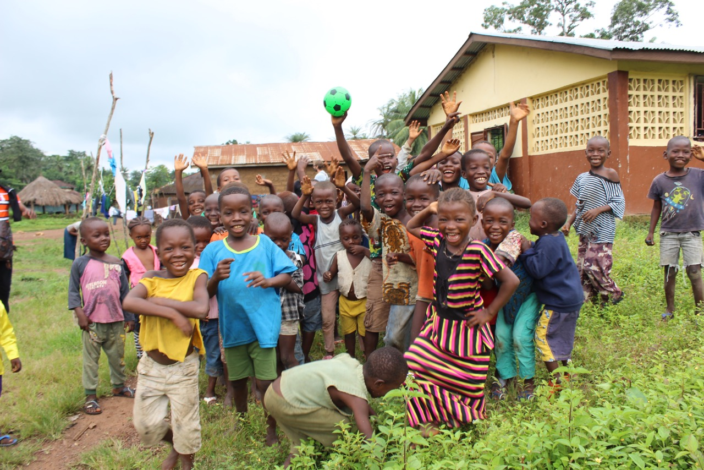
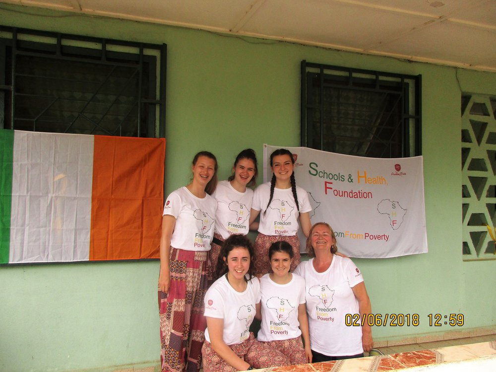

- 


- 

- Travel is probably the hobby or interest I am most passionate about. My dad works abroad and travels around Europe with his job and so I have been raised to enjoy seeing different parts of the world and experiencing many different cultures. I have travelled to many different countries and cities.
- In 2018 I travelled to Sierra Leone in Africa with a charity called The School's and Health Foundation. While there, we visited the 5 schools we had fundrasied and built in various villages in Sierra Leone. It was a lifechanging experience which I absolutely adored. I intend on travelling to Sierra Leone in 2021 and am looking forward to it greatly.
- In 2017 I visted New York City in the USA. This was most definitely my favorite city I have visted. While there I saw all the main tourist attractions such as the Empire State Building, the World Trade Center and the 9/11 memorial, the Statute of Liberty and more.
- Other Countries I have visited include England, Frace, Spain, Portugal, Italy, Germany, Austria, Belgium, Greece, and Crotia.
Home
Sports